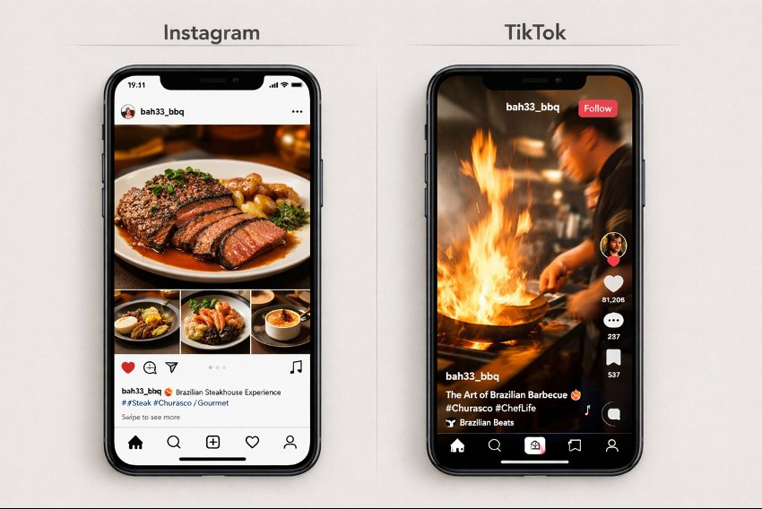

The setup
Two linked projects for the Digital Marketing Communications module. The group brief was to build a full digital marketing strategy for BAH33°, a Brazilian barbecue restaurant on Dawson Street in Dublin. The individual brief was to expand on a chosen part of that strategy in depth.
The insight
BAH33° is not just another Dublin restaurant. It is a premium Brazilian steakhouse on Dawson Street, which makes it a natural choice for client lunches, team dinners, and corporate hosting. The opportunity was not to compete with casual diners on Instagram trends. It was to position BAH33° as the reliable choice for the people doing the booking when the stakes matter.
The work
In the group project, I owned the content marketing strand of the full strategy. I built the approach around four content pillars designed to move target personas from awareness through to trust and booking intent. I also developed the content calendar that mapped this out across platforms.
For the individual project, I expanded the content marketing work into a deeper plan: post mockups for Instagram and TikTok generated with AI, refined messaging for each pillar, and platform-specific tactics.
The four pillars
Confident Hosting
The structured rodízio service, continuous table-side flow, and clear pricing reduce perceived risk for those hosting client lunches.
Fire and Culinary Craft
Open-flame grilling, table-side carving, and preparation detail that support premium positioning and reinforce food quality.
Gaucho's Selection
A monthly chef-led feature on one premium cut: origin, preparation, and cultural context. Builds confidence in what diners are serving clients.
Professional Dining
Content built around business lunch etiquette, timing, and corporate hosting needs.
Sample post mockups
I used AI-generated visuals to mock up how content from each pillar would land on Instagram and TikTok. This made the strategy concrete rather than abstract, with a visual reference for tone, framing, and format alongside the written plan.
What I took from it
Good content strategy starts with who you are actually trying to win, not where you want to post. Building the four pillars around the corporate hosting audience meant every piece of content had a specific job: reduce risk for the booker, justify the price, build culinary credibility, fit the business lunch context. This project taught me to think about content as a tool for confidence, not just attention.